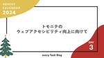
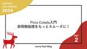
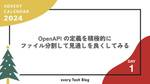

every Tech Blog
https://tech.every.tv/
株式会社エブリーのTech Blogです。
フィード

初めて経験したLaravel、Pestを利用した単体テストで感じたこと
every Tech Blog
はじめに この記事は every Tech Blog Advent Calendar 2024 の8日目の記事です。 こんにちは、リテールハブ開発部でバックエンドエンジニアをしています。 実はまだ転職して２ヶ月のため、まだまだわからないことだらけですが、 現在、Laravelを利用したAPI開発をしていて、その中でPestを利用した単体テストを行なっています。 前職のAPIテストは結合テストメインで行っていて、単体テストはほとんど行なっていなかったのですが、 検証データの準備や継続的なテストにおいて課題がありました。 今回LaravelもPestも初めて利用するのですが、今回行った単体テストを…
12時間前

A/Bテスト自動レポーティングによるビジネスサイドの意思決定支援
every Tech Blog
はじめに この記事はevery Tech Blog Advent Calendar 2024の7日目の記事です。 エブリーでデータサイエンティストをしている山西です。 今回は、A/Bテスト結果のレポーティングを自動化した事例をご紹介します。 ビジネスサイドが抱く「統計学的なとっつきにくさ」を解消し、結果を解釈しやすく伝えるための試みです。 図1: 結果のレポーティングの雰囲気（評価指標に対して、ダッシュボード上で結果を確認できる） ※ 本記事はランダム化比較実験や統計的仮説検定の基礎知識を前提としています。これらの知見をビジネスに還元する取り組み事例として、何かしらご参考になれば幸いです。 以…
2日前

全社的にSSH辞めるためには 1
1
every Tech Blog
全社的にSSH辞めるためには この記事は every Tech Blog Advent Calendar 2024 の 6 日目の記事です。 はじめに エブリーTIMELINE開発部の内原です。 全社的にSSHの利用を中止することができたので、そのような意思決定をすることに至った経緯や、その後の状況について紹介します。 なお前提として、下記記事はAWSに限定した内容となっています。 エブリーではGCP(GCE)も一部のサービスで利用しているのですが、GCEについては下記で説明する問題の影響がなかったため対象外としています。 SSH利用を中止したい理由 以下のような理由から、運用的にいろいろ辛い…
2日前

ISUCONに向けて勉強したこと 1
every Tech Blog
この記事は every Tech Blog Advent Calendar 2024 5 日目の記事です。 はじめに こんにちは、DELISH KITCHEN 開発部でソフトウェアエンジニアをしている24新卒の新谷です。 今回は12/8開催のISUCON14に向けて、ISUCON初参加の私が勉強したことについてまとめていきます。 また、everyはISUスポンサーとして協賛しており、詳しくは以下をご覧ください。 tech.every.tv 初参加に向けたざっくりの戦略 今回参加したチームは、日本CTO協会の新卒合同研修で知り合った新卒メンバーで出場しました。 （日本CTO協会の新卒合同研修につ…
3日前

SonyflakeでUnique IDentifierを生成しよう
every Tech Blog
はじめに この記事は every Tech Blog Advent Calendar 2024 の4日目の記事です。 DelishKitchenやヘルシカのバックエンドやらインフラやらをやっているyoshikenです。 今回は弊社でも利用しているUID生成に便利なSonyflakeについて説明していきます。 UIDとUUIDの違い まず、UIDとUUIDの違いについて理解をしましょう。 UUID RFC 9562で標準化されている"普遍的にユニークな識別子"のことです。UUIDは、主にデータベースの主キーや分散システムにおけるオブジェクト識別子として使用され、形式は以下のようになっています。 …
4日前

トモニテのウェブアクセシビリティ向上に向けて 2
every Tech Blog
トモニテのウェブアクセシビリティ向上に向けて この記事は every Tech Blog Advent Calendar 2024 の 3 日目の記事です。 はじめに こんにちは！トモニテにて開発を行っている吉田です。 今回は最近私が少し気にするようにしている（今更？とは言わないでもらえると嬉しい...）ウェブアクセシビリティについて、所属しているトモニテを対象に記事にします。 そもそもアクセシビリティとは？ 「アクセシビリティ」という言葉は、Access（近づく、アクセスするの意味）と Ability（能力、できることの意味）からできています。近づくことができる」「アクセスできる」という意味…
6日前

Pinia Colada入門：非同期処理をもっとスムーズに！ 2
every Tech Blog
はじめに Pinia Colada とは 非同期処理の課題 1. 冗長なコード 2. 状態管理の複雑さ 3. 効率的なデータフェッチング 非同期処理における様々なアプローチ 1. Vue Promised 2. swrv 3. TanStack Query (Vue Query) Pinia Colada の優位性 Pinia Colada の基本的な使い方 セットアップ 基本的なデータ取得の例 ポイント解説 まとめ はじめに この記事は every Tech Blog Advent Calendar 2024 の2日目の記事です。 はじめまして、エブリーの羽馬（@naoki_haba）です。…
6日前

OpenAPI の定義を積極的にファイル分割して見通しを良くしてみる 2
every Tech Blog
この記事は every Tech Blog Advent Calendar 2024 1 日目の記事です。 はじめに 現状の管理方法からの問題点 分割の手段 分割によるメリット・デメリット まとめ 最後に はじめに こんにちは、トモニテ開発部ソフトウェアエンジニア兼、CTO 室 Dev Enable グループの rymiyamoto です。 Advent Calendar のトップバッターを務めさせていただきます！ 今回は OpenAPI でスキーマ駆動開発をしていく上での定義ファイルの管理方法についてお話できればと思います。 元々別の新規プロダクトで採用されていた分割方法をトモニテでも取り入…
7日前

いよいよ開幕！every Tech Blog Advent Calendar 2024
every Tech Blog
はじめに every Tech Blog Advent Calendar 2024の公開スケジュール 最後に はじめに はじめまして、エブリーの羽馬（@naoki_haba）です。 今年も残り1ヶ月となり、12月の恒例イベント every Tech Blog Advent Calendar 2024 を開催します！ このカレンダーでは、エブリーのエンジニアが日々の学びや実践的な技術ノウハウを発信していきます。 技術的な工夫や挑戦の裏側など、幅広いテーマでお届けしますので、ぜひチェックしてください！ 過去のアドベントカレンダーはこちらからどうぞ！ tech.every.tv tech.every…
9日前
IBIS2024に参加しました
every Tech Blog
こんにちは。2024/11/04~11/07に開催された統計・機械学習系の学会、第27回情報論的学習理論ワークショップ(IBIS2024)に、弊社データサイエンティストチームでオフライン&オンラインで参加してきました。 2024年は、人工ニューラルネットワークによる機械学習を可能にした基礎的発見と発明に対する業績により、AI/MLの分野がノーベル物理学賞を受賞したこともあり、特別企画として貴重な講演を聞くことができました。 また、2024年のIBISは「開かれたIBIS」として総勢1134名もの参加者が集まり、多くの研究者や企業の方々と交流することができ、チュートリアルや企画セッションを始め、…
10日前
エブリーはゴールドスポンサーとして PHP Conference Japan 2024に協賛します！
every Tech Blog
株式会社 エブリーは、2024年12月22日(日)に大田区産業プラザPiOで開催される「PHP Conference Japan 2024」にゴールドスポンサーとして協賛いたします。 PHP Conference Japan 2024 とは PHP Conference Japan は、日本PHPユーザ会（Japan PHP Users Group）が主催する、国内最大規模のPHPカンファレンスです。 国内の業界トップランナーによるPHP最新動向や、コアテクノロジーからPHP初心者向けセッションまで、多くのセッションを届けるイベントです。 これからPHPをはじめる方から、さらにPHPを極めてい…
13日前
ISUCON14でISUポンサーとして協賛します！
every Tech Blog
はじめに こんにちは、トモニテ開発部ソフトウェアエンジニア兼、CTO 室 Dev Enable グループの rymiyamoto です。 この度、エブリーは 2024年 12月 8日に開催される『ISUCON14』に、ISUポンサーとして協賛することになりました！ isucon.net ISUCONとは？ ISUCONは「いい感じにスピードアップコンテスト（Iikanjini Speed Up Contest）」の略称で、Webシステムのパフォーマンスを競うコンテストです。 参加者は、与えられたWebアプリケーションの性能を向上させるためにチューニングを行い、競技時間内に最高のスコアを目指しま…
17日前
Amazon QuickSightのSPICEに入れるデータを加工する際に注意すること
every Tech Blog
はじめに こんにちは、開発本部のデータ＆AIチームの24新卒の蜜澤です。 現在取り組んでいる業務で、Amazon QuickSight(以下quicksight)を使用しているので、quicksightでSPICEに入れるデータを加工する際に注意することについてまとめたいと思います。 SPICEというのはインメモリエンジンで、SPICEにデータを取り込むことで、クエリ速度の向上とクエリを叩くコストの節約をすることができます。 作成したいデータセット 今回SPICEに入れたいデータは以下のようになっています。 レシピ動画サービスの検索傾向を可視化するために、ユーザーの検索ログを集計したデータとい…
23日前
datadogのsmoothingを"理解"する
every Tech Blog
はじめに エブリーの吉田です。 今回はDatadogのMonitor等で使用する関数、Smoothing(平滑化)について書いていきます。 公式ドキュメントにも色々書いてあるのですが、数学から離れて久しいため、再確認も兼ねてできるだけ丁寧に説明していきます。 https://docs.datadoghq.com/ja/dashboards/functions/smoothing/ datadogのsmoothingはEWMA, Median, Autosmoothがありますが、それぞれ数式以外の設定の仕方は公式ドキュメントを参照してください。 EWMA EWMAは "Exponentially…
25日前
RAGでOpenAI APIのStructured Outputsを使い倒す
every Tech Blog
こんにちは。 開発本部のデータ&AIチームでデータサイエンティストをしている古濵です。 昨今の生成AIはどんどん新しいものが生まれ、日々キャッチアップを欠かせない日々を過ごしております。 9月もo1モデルが発表されましたが、今回はそちらではなく、8月に発表されたStructured Outputsを活用した取り組みについてご紹介します。 Structured Outputsとは openai.com Structured Outputsとは、モデルによって生成された出力が、開発者が提供する JSON スキーマと完全に一致するように設計された新機能です。 今までもJson ModeやFuncti…
1ヶ月前
golangci-lint を整備したらレビュー時間が短くなった話
every Tech Blog
はじめに こんにちは、@きょーです！普段はDELISH KITCHEN開発部のバックエンド中心で業務をしています。 チームに join した内定者のサポートをしているのですが成長ぶりが凄まじく驚くばかりです。その成長を近くで眺めるのが最近の趣味です。 この記事の対象者 レビューで不要な空行やマジックナンバーなどの実装ではなくコードスタイルに関する指摘をしたこと・受けたことがある人 golangci-lintがリポジトリに入っているが、既存の設定状態で使っているだけで見直しできていない人 導入 僕が関わっているプロジェクトでは、golangci-lintを使用していますが、ほぼプロジェクトに導入…
1ヶ月前
シングルトンパターンの問題点と改善方法 - 保守性とテスタビリティの向上を目指して -
every Tech Blog
はじめに DELISH KITCHENのiOSアプリ開発を担当している池田です。iOSチームでは継続的な開発のために日々リファクタリングを行っております。 リファクタリングを進める中で、特に厄介な存在として浮かび上がってきたのがシングルトンパターンです。シングルトンは便利な機能に見えますが、アプリケーションの保守性やテスタビリティを低下させる要因となっています。 本記事では、シングルトンパターンの問題点を解説し、より良い設計への改善方法を提案します。 シングルトンとは アプリ内に存在するクラスのインスタンスをひとつに制限させる設計パターンで、静的なインスタンスフィールドからグローバルにアクセス…
1ヶ月前
Amazon Cognito設定項目のポイント
every Tech Blog
はじめに こんにちは、DELISH KITCHEN 開発部でソフトウェアエンジニアをしている24新卒の新谷です。 現在取り組んでいる業務で、共通認証基盤にemailを使った認証を導入するため、Amazon Cognitoを利用しています。（共通認証基盤については、こちらをご参照ください。）その際に、Amazon Cognitoの設定項目について調査する機会があったので、その内容をご紹介します。 Amazon Cognitoとは Amazon Cognitoは、AWSが提供するウェブアプリとモバイルアプリ用のアイデンティティプラットフォームです。ユーザーの認証・承認を行うユーザープールとユーザー…
1ヶ月前
Vue Fes Japan 2024 Pre LT Party で登壇しました
every Tech Blog
はじめに エブリーの羽馬(https://twitter.com/naoki_haba)です。 2024年10月17日に開催された Vue Fes Japan 2024 Pre LT Party にて「unplugin-vue-routerで実現するNuxt風ファイルベースルーティング」というテーマで登壇させていただきました。 optim.connpass.com この記事では、unplugin-vue-router の魅力と発表で伝えたかったポイントについて共有します。 イベント概要 Vue Fes Japan 2024に先立って開催された事前LTイベントでは、Vue.js に関する様々なト…
1ヶ月前
amazon-quicksight-embedding-sdkを利用したQuickSightの埋め込み
every Tech Blog
エブリーでデータエンジニアを担当している塚田です。 QuickSightを活用したビジュアライズを進めていますが、そのビジュアルの埋め込みで外部のサイトで表示する部分を検証しています。 今回はその検証過程で利用したamazon-quicksight-embedding-sdkについて、使用方法などを紹介します。 Amazon QuickSightとは Amazon QuickSightは、AWSが提供するビジネスインテリジェンス (BI) サービスです。AWSとの連携が容易で、比較的簡単に利用を開始することができます。 QuickSightの大きな特徴として、SPICEと呼ばれるインメモリエン…
1ヶ月前
Flutter2から3に上げた際のNull Safety対応
every Tech Blog
Flutter2から3に上げた際のNull Safety対応 はじめに リテールハブ開発部のネットスーパー事業向き合いで開発を行っている野口です。 今回は、弊社で開発しているFlutterアプリのバージョンを2.10.5から3.24.3に上げた際にNull Safety対応を行ったのでそれについて書いていきます。 Null Safetyとは Null Safetyは、変数が null を持つことによって発生するバグを防ぐための仕組みです。 Flutter2以前では変数はnullableになっているため、nullを考慮したコードが必要でした。 Flutter3以降では、変数がnon-nullab…
1ヶ月前
Vue Fes Japan 2024 参加レポート
every Tech Blog
エブリーは2024年10月19日（土）に開催された Vue Fes Japan 2024 にゴールドスポンサーとして協賛させていただきました。 今回は参加レポートとして、会場の様子やセッションの感想についてお届けします。 イベント概要 Vue Fes Japanは、日本最大のVue.jsカンファレンスです。今年も多くの開発者が集まり、最新のVue.js関連技術や事例について学び、交流する機会となりました。 セッションの感想 1. キーノート Evan You氏によるキーノートセッションでは、Vue.jsエコシステムの最新動向と将来の展望について、深い洞察が共有されました。 主な注目ポイントは以…
2ヶ月前
Amazon Cognitoのユーザーの移行
every Tech Blog
はじめに エブリーでソフトウェアエンジニアをしている本丸です。 最近、Amazon Cognitoのユーザープールから別のユーザープールにユーザーを移行する方法について調査する機会がありました。 Amazon Cognitoに関しては色々な箇所で使われていると思いますが、ユーザーの移行について触れる機会はそれほど多くないかと思いますので紹介しようかと思います。 Amazon Cognitoとは Amazon Cognito(以降Cognitoと表記します)は、AWSが提供するウェブアプリとモバイルアプリ用のアイデンティティプラットフォームです。ユーザーの認証・承認を行うユーザープールとユーザー…
2ヶ月前
Vue Fes Japan 2024直前！エブリーのブース紹介とイベント情報
every Tech Blog
こんにちは、DevEnableグループの羽馬です。 いよいよ日本最大のVue.js開発者カンファレンス「Vue Fes Japan 2024」の開催が目前に迫りました！ 10月19日に開催されるこのイベントは、Vue.jsエコシステムの最新トレンドや先端技術が一堂に会する、開発者必見の祭典です。 エブリーは今年初めてゴールドスポンサーとして協賛し、Vue.jsコミュニティの皆様との交流を心待ちにしています。 この記事では、エブリーのブース内容の詳細や、カンファレンスの前後に開催するVue Fes Japan 2024関連イベントについてご紹介します。Vue.jsに興味がある方、エブリーの技術や…
2ヶ月前
生成AIを利用したLP実装の自動生成に挑戦してみた
every Tech Blog
生成AIを利用してトモニテが公開しているLPの自動生成に挑戦してみた時の話をしたいと思います。（※2024年7月下旬〜8月上旬時点での話になります。）
2ヶ月前
SQLでそれっぽく異常検知してみる
every Tech Blog
レシピメディアにおいて、たとえば検索数推移のような時系列的なデータを扱っていると、急激に検索数が伸びているワードを捕捉したいシーンがあります。 要因はものによって違いますが、これをSQLだけで完結してなるべく楽したい。が今回の目的です。 要するに異常検知をすることが目的なのですが、「上昇率がX%以上を検知する」ような単純なモデルではないが、ある程度統計的な根拠をもとに検知が可能で、かつPythonのライブラリをつかうほど複雑ではなくSQL上でわかりやすく書けることを主眼に置きます。 方針としては以下です。 特定ワードにおける検索数の時系列データが正規分布に従うと仮定する 特定ウィンドウにおける…
2ヶ月前
API を本番のデータにつなぎながら確認できるステージング環境を作成しました
every Tech Blog
はじめに こんにちは！トモニテにて開発を行っている吉田です。 今回は API を本番のデータにつなぎながら確認できるようステージング環境を作成したのでそのことについて書いていきます！ 目的 本番環境へのリリース前には、さまざまなケースを考慮したテストを行うことが不可欠です。しかし、開発環境で考えられる限りのケースを網羅しても、どうしても考慮漏れが発生することがあります。このようなリスクを軽減するために本番環境を利用したステージング環境を構築しました。 これにより、実際のデータを使用しながら運用時を想定したテストを行うことが可能になりリリース前に潜在的な問題を早期に発見し、サービスの品質を向上が…
2ヶ月前
Cloud SQL for MySQL 5.7 から 8.0 移行計画
every Tech Blog
Cloud SQL for MySQL 5.7 から 8.0 移行計画 はじめに こんにちは、TIMELINE 開発部 Service Development をしているほんだです！ つい最近 Aurora MySQL バージョン 3 対応したな...。というのはさておき。 今回は Cloud SQL for MySQL のデータベースバージョンを 5.7 から 8.0 に移行する際に行った方法について紹介します！ 前提 皆さんご存知かと思いますが、2025年2月1日からCloud SQLではMySQL 5.7, 5.6の拡張サポートが開始し、2028年2月1日はサポートが終了します。そこでT…
2ヶ月前
リテールハブ開発部の新設とDELISHKITCHEN開発部長の交代
every Tech Blog
タイトル - リテールハブ開発部の新設とDELISHKITCHEN開発部長の交代 はじめに 皆さん、いつもお世話になっております。CTO/開発本部の今井です。 本ブログでは、あたらくリテールハブ開発部を立ち上げたことおよび自分が兼務で務めていたDELISHKITCHEN開発部長の交代についてお話させていただきます。 リテールハブ開発部の設立 このたび、10/1でリテールハブ開発部を新設し、そこの開発部長を私が務めることになりました。 リテールハブ開発部は、これまでDELISHKITCHEN開発部で手掛けてきた小売向けのサービス開発に注力をする新しい部門となります。 先んじて、ビジネス側はすでに…
2ヶ月前
満たしたい状態の定義から始めるシステムDD
every Tech Blog
はじめに こんにちは。DELISH KITCHEN 開発部 RHRA グループ所属の池です。 2024年6月、エブリーは5つの小売アプリの運営について事業譲渡を受け、『 retail HUB 』へ移管しました。 prtimes.jp この事業譲渡において、私はシステムに関するデューデリジェンス（以下、システムDD）を担当しました。 今回 retail HUB へ移管したシステムは具体的には 5つプロダクトそれぞれにおける、iOS/Androidのネイティブアプリと、入稿管理画面の Web アプリケーションサーバー、アプリ向け API サーバー、それらを構成するシステム（AWS環境、ロードバラン…
2ヶ月前